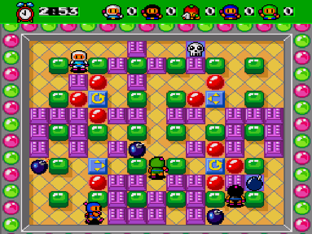
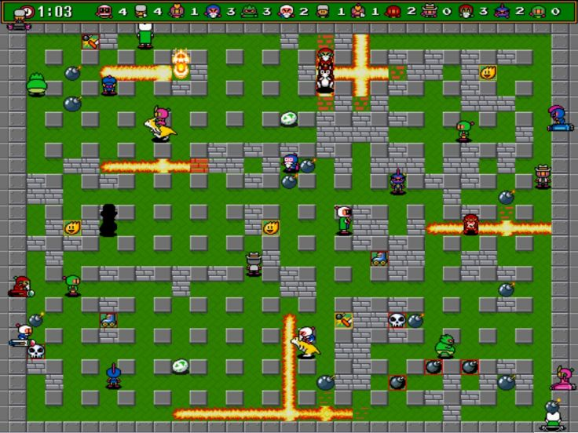
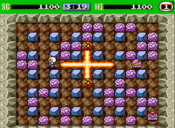

Bomberman
Le héros "Bomberman" est connu pour son concept original qui consiste à diriger le personnage dans une sorte de labyrinthe en y déposant des bombes pour contrer des ennemies ou détruire des murs. C'est un jeu de reflexion, coloré et trés enfantin mais qui demande beaucoup de stratégie et de technique. Différents personnages sont débloquables ainsi que differents items qui permettre d'enrichir le jeu et de lui donner plus de défis. Un mode multijoueur est également disponible dans la plupart des jeux Bomberman, ce qui a séduit petit et grand.
Lien des articles :
- La mémoire du pad
- Emunova
- Emultest


